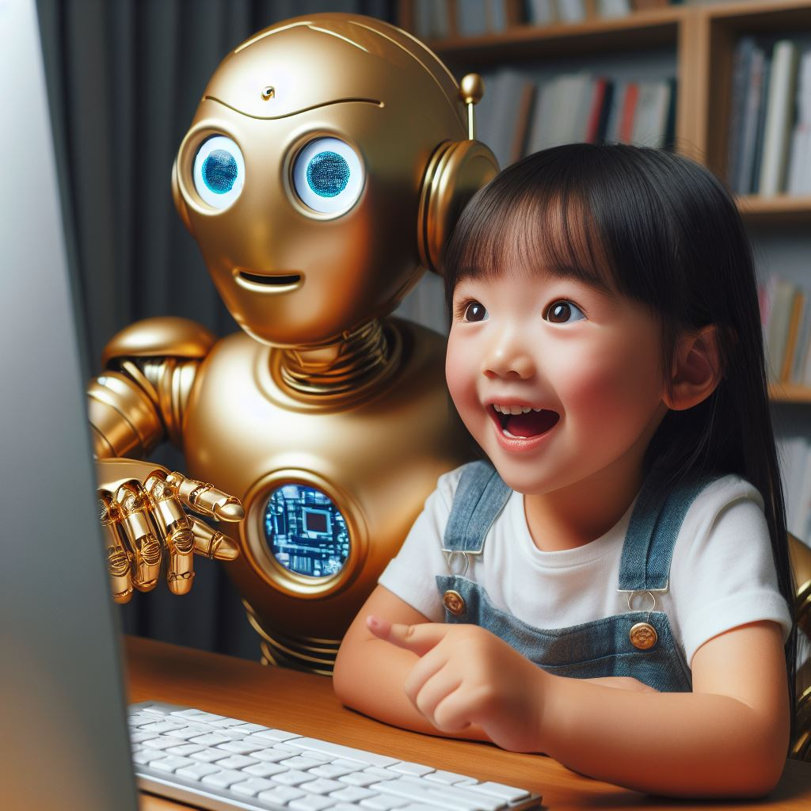

<main class="page-main">
  <div class="container">
    <header class="page-header">
      <h1>RIDE⋮AI</h1>
      <p class="page-intro">Revolutionising Interest-Driven Education through AI</p>
    </header>

    <section>
    <div class="container container--narrow prose">
      
      <h2>The Broken Chain</h2>
      <p>
        For generations, education has operated on a simple motivational logic: <strong>learn → qualify → get a job → make a living</strong>. This chain justified enormous investments of time, effort, and deferred gratification. Students endured subjects they didn't love because qualifications opened doors.
      </p>
      <p>
        AI breaks this chain. When machines can perform many of the cognitive tasks that education traditionally prepared people for, the old bargain weakens. "Learn this because you'll need it for work" becomes less compelling when work itself is being transformed.
      </p>
      <p>
        Some respond with denial—insisting that human skills will always be needed (true, but which ones?). Others respond with panic—predicting mass unemployment and irrelevance. We think both miss the deeper opportunity.
      </p>

      <div>
        
      </div>
      <h2>Not New Technology: New Purpose</h2>
      <p>
        The temptation is to treat AI as just another educational technology—a more sophisticated textbook, a tireless tutor, a grading assistant. This is thinking too small.
      </p>
      <p>
        <strong>AI doesn't just change how we deliver education. It changes what education is for.</strong>
      </p>
      <p>
        When AI can handle much of what we once called "knowledge work," education can no longer justify itself primarily as job training. It must return to older, deeper purposes: cultivating curiosity, developing judgment, fostering creativity, building character, discovering meaning.
      </p>
      <p>
        This isn't a retreat to impractical idealism. It's a recognition that in an AI world, these "soft" capacities become the hard currency. The ability to ask good questions matters more than memorising answers. The capacity to synthesise across domains matters more than depth in a single specialism. The wisdom to know when to trust AI—and when to override it—becomes essential.
      </p>

      <h2>The Curriculum Question</h2>
      <p>
        If AI changes what's worth knowing and being able to do, then the curriculum must change too. This is not about adding an "AI literacy" module while leaving everything else intact. It requires asking fundamental questions:
      </p>
      <ul>
        <li>Which human capabilities become <em>more</em> valuable when AI handles routine cognitive work?</li>
        <li>What knowledge do humans need to <em>understand</em> versus merely <em>access</em>?</li>
        <li>How do we cultivate judgment, taste, and wisdom—capacities that resist automation?</li>
        <li>What does mastery look like when AI can perform at expert level in many domains?</li>
      </ul><br><br>
      <p>
        Schools that merely bolt AI tools onto an unchanged curriculum will find themselves preparing students for a world that no longer exists. The deeper work is rethinking what we teach and why—and having the courage to let go of content that no longer serves learners.
      </p>
      <div>
        
      </div>
      <h2>Interest-Driven Learning</h2>
      <p>
        If the old motivational chain is broken, what replaces it? We believe the answer is <strong>interest</strong>—genuine, intrinsic engagement with learning for its own sake.
      </p>
      <p>
        This isn't a new idea. Progressive educators have championed it for over a century. But AI makes it newly practical. When every learner can have access to infinitely patient, deeply knowledgeable support tailored to their individual interests and pace, the constraints that forced standardised, one-size-fits-all education dissolve.
      </p>
      <p>
        AI enables truly personalised pathways through knowledge—not the shallow "personalisation" of adaptive testing, but genuine responsiveness to what each learner finds fascinating, confusing, or inspiring.
      </p>

      <blockquote>
        <p>Educational success lies not only in finding the unique path that each of us can best take through life, but in acquiring the courage, resilience and skills needed if we are to create and travel down that path in a way best suited to ourselves that makes a sustainable contribution to human thriving.</p>
      </blockquote>

      <h2>The Teacher's Role Transformed</h2>
      <p>
        If AI can explain, answer questions, provide feedback, and track progress, what is left for human teachers? Everything important.
      </p>
      <p>
        Teachers become mentors, guides, provocateurs. They model intellectual virtues—curiosity, rigour, humility, persistence. They notice what algorithms miss: the student who gives right answers but doesn't understand, the quiet one with unexpressed potential, the social dynamics that shape learning.
      </p>
      <p>
        Freed from the impossible task of simultaneously serving thirty learners at different levels, teachers can do what humans do best: inspire, challenge, support, connect. The role becomes <em>more</em> skilled, not less—requiring greater pedagogical wisdom, not merely content expertise.
      </p>

      <h2>What RIDE⋮AI Means in Practice</h2>
      <p>
        We work with schools and educational institutions to:
      </p>
      <ul>
        <li>Audit current practice through the lens of AI transformation</li>
        <li>Identify curriculum areas ripe for fundamental rethinking</li>
        <li>Develop AI integration strategies that enhance rather than replace human teaching</li>
        <li>Train teachers in the pedagogical shifts that AI enables and demands</li>
        <li>Create assessment approaches suited to an age when AI can pass most traditional tests</li>
        <li>Build organisational capacity for ongoing adaptation as AI capabilities evolve</li>
      </ul>

      <div class="mt-lg text-center">
        <a href="contact.html" class="btn btn--primary">Start a conversation</a>
      </div>

    </div>
  </section>
  </div>
</main>
